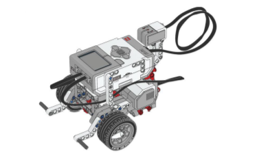

Ce projet d’école d’ingénieur a été un défi interdisciplinaire
stimulant. Nous devions concevoir et réaliser un algorithme pour un robot autonome
de sorte qu’il soit capable de passer par plusieurs points donnés en prenant le
chemin le plus court à chaque fois.
This ENSEM engineering school project was a stimulating interdisciplinary
challenge. We had to design and implement an algorithm for an autonomous robot so
that it could pass through given points while taking the shortest path each time.
02 · Moyens
02 · Means
Nous avons utilisé
What we used
Un robot avec des capteurs, des sphères réfléchissantes à disposition géométrique
3D unique, et le protocole NatNet.
OptiTrack — capture de mouvement : caméra Prime × 22 (localisation et cartographie
simultanées) avec NatNet pour connaître la position réelle du robot.
TCP — connexion au serveur du robot depuis le programme client créé pour afficher
l’interface.
A robot with sensors, reflective spheres in a unique 3D geometric layout, and the
NatNet protocol.
OptiTrack motion capture: Prime × 22 cameras (simultaneous localization and mapping)
with NatNet to know the robot’s real position.
TCP — connect to the robot server from the client program we built to display the
interface.
Châssis LEGO Mindstorms EV3 avec sphères réfléchissantes disposées en géométrie 3D
unique. Motive les reconnaît comme un corps rigide ; on envoie ensuite les consignes
de déplacement au serveur embarqué via TCP.
LEGO Mindstorms EV3 chassis with reflective spheres in a unique 3D layout. Motive
tracks it as a rigid body; we then send motion commands to the onboard server over TCP.

02c · OptiTrack
02c · OptiTrack
Motive, calibration et streaming
Motive, calibration and streaming
Salle SAMI · plateau 4 × 3 m. Caméras PrimeX 22 en PoE (Ethernet), logiciel Motive:Tracker
et plugin NatNet pour diffuser la position des corps rigides en multicast UDP.
SAMI room · 4 × 3 m arena. PrimeX 22 PoE (Ethernet) cameras, Motive:Tracker software
and the NatNet plugin to broadcast rigid-body positions over UDP multicast.
Calibration : optiwand, plan de sol (ground plane), masquage des marqueurs parasites.
Création d’un corps rigide par robot dans Motive (Layout → Create).
Résolution de problèmes : combinaison de deux méthodes — algorithme du plus
proche voisin et forme adaptée de l’algorithme génétique.
Problem solving: combination of two methods — nearest neighbor and an adapted
genetic algorithm.
Automatique
Control
Contrôle par rétroaction, minimisation des déviations par rapport à la
trajectoire théorique.
Feedback control, minimizing deviations from the theoretical trajectory.
CS (mon équipe)
CS (my team)
Intégrer le travail des deux autres équipes : interactions entre classes,
communication client–serveur pour envoyer les mouvements au robot, et affichage
des mouvements sur notre interface.
Integrate the other teams’ work: class interactions, client–server communication
to send motions to the robot, and display performed motions on our interface.
04 · Repères
04 · Frames
SAMI ↔ Motive
SAMI ↔ Motive
Motive utilise un repère en mètres (x′ vers la droite, z′ vers le haut). Le robot
raisonne dans un repère SAMI en centimètres (x vers le bas, y vers la droite).
La conversion se fait avant d’envoyer les consignes au serveur embarqué.
Motive uses a metre frame (x′ right, z′ up). The robot works in a SAMI frame in
centimetres (x down, y right). We convert before sending commands to the onboard server.
Plateau 4 m × 3 m — origine SAMI en haut à gauche.
OptiTrack / NatNet pour la position, winSCP & PuTTY vers le robot, interface
utilisateur en Tkinter. Trames NatNet décryptées côté Python (types NAT_FRAMEOFDATA,
NAT_MODELDEF) pour récupérer position et orientation du corps rigide.
OptiTrack / NatNet for position, winSCP & PuTTY to the robot, user interface in
Tkinter. NatNet frames parsed in Python (NAT_FRAMEOFDATA, NAT_MODELDEF) to read rigid-body
position and orientation.
Points de passage lus depuis un fichier (ex. fichier_de_points.txt) — le pôle
maths calcule le plus court chemin, mon équipe CS intègre le tout dans l’interface.
Waypoints read from a file (e.g. fichier_de_points.txt) — the maths track
computes the shortest path; my CS team integrates everything in the interface.